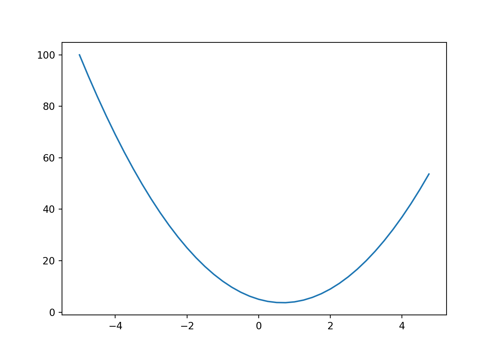
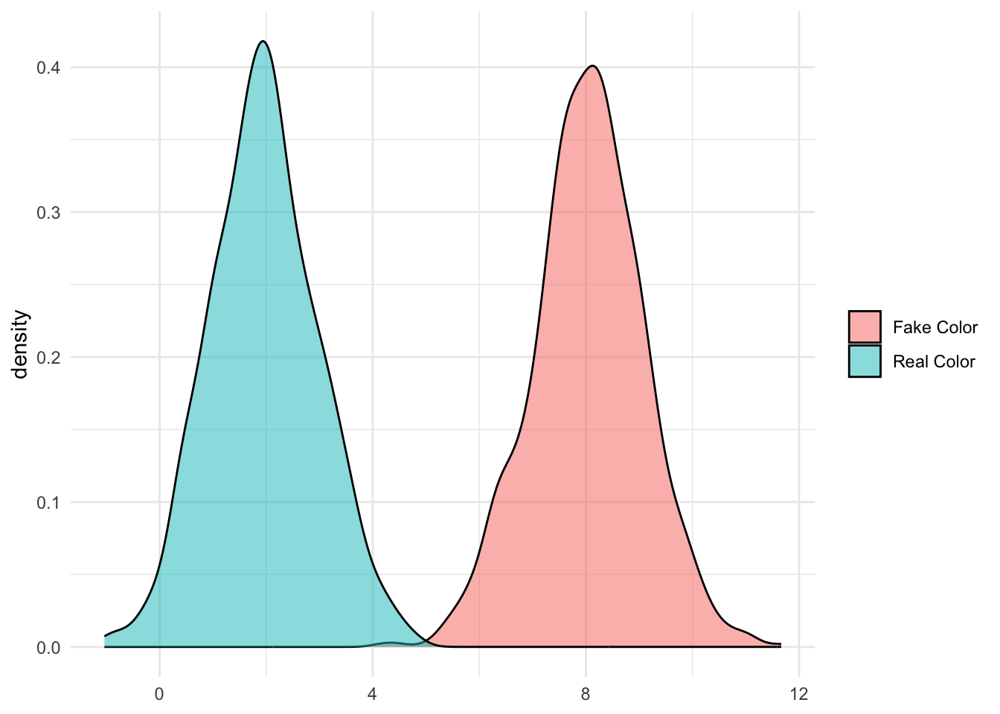
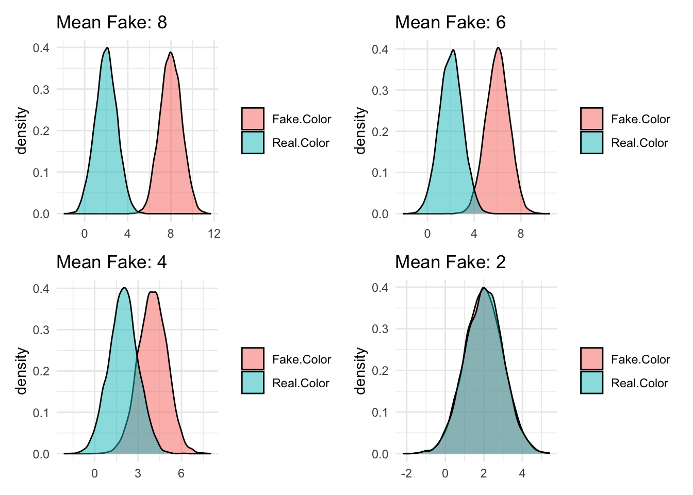

Right now this is going to cover lots of different things that feel a little scatter shot. This is because an interview I am prepping for is scant on detail but explicitly mentions a whole host of deep learning stuff.
10.2 Neural Networks
So I am just going to go through the zero to neural network video. One of the important basic concepts is back propagation.
from micrograd.engine import Value from micrograd import nn a = Value(-4.0)b = Value(2.0)c = a + bd = a * b + b**3c += c +1c +=1+ c + (-a)d += d *2+ (b + a).relu()d +=3* d + (b - a).relu()e = c - df = e**2g = f /2.0g +=10.0/ fprint(f'{g.data:.4f}') # prints 24.7041, the outcome of this forward pass
24.7041
g.backward()print(f'{a.grad:.4f}') # prints 138.8338, i.e. the numerical value of dg/da
138.8338
print(f'{b.grad:.4f}') # prints 645.5773, i.e. the numerical value of dg/db
645.5773
Back propagation is going to start at g and recursively go back and apply the chain rule. We are going to be able to evaluate the derivative of g through each of the nodes c, d, e, f or the inputs of a and b. What this back propagation will tell us is what will end up happening to g if we nudge a or b. So the 138 of is the slope of the growth. Neural networks are simply just little math machines that take input data and the weights of a neural network as inputs into this math machine and output its predicitions.
None of the math changes we just end up bundling them to make it more efficient to actually train these things.
10.3 What is a derivative
import math import numpy as np import matplotlib.pyplot as plt def f(x):return3*x**2-4*x+5xs = np.arange(-5,5, 0.25)ys = f(xs)plt.plot(xs, ys)

So we are just going to define a scalar value function that takes a single scalar and returns a single scalar. What is the derivative of different points of x for this function. What a derivative is when we slightly increase an input say x how does the function respond with what sensitivity what is the slope how much does it go up or down.
h =0.001x =3.0f(x + h)
20.014003000000002
(f(x + h) - f(x))/h
14.00300000000243
z =-3(f(z + h) - f(z))/h
-21.996999999998934
as we start fiddling with it we get closer and closer to the true slope. When its at three its about 14. If we do this same excercise with a negative number. In a bit more of a complex case where we have three scalars as inputs and a single output. We are again going to look at the deriviatives for d for the inputs of a, b, and c
h =0.001a =2.0b =-3c =10.0d1 = a * b + c # inputs a += h d2 = a * b + cprint(f"d1 = {d1}, d2 = {d2}, slope = {(d2-d1)/h}")
d1 = 4.0, d2 = 3.997, slope = -3.0000000000001137
Here we are looking at the derivative of with respect to a so we are going to bump it by h. If we did it with b by a little bit
h =0.001a =2.0b =-3c =10.0d1 = a * b + c # inputs b += h d2 = a * b + cprint(f"d1 = {d1}, d2 = {d2}, slope = {(d2-d1)/h}")
d1 = 4.0, d2 = 4.002, slope = 1.9999999999997797
Code
from graphviz import Digrapha = Value(2.0)b = Value(-3.0)z = Value(4.0)c = a + b * zd = c * adef trace(root): nodes, edges =set(), set()def build(v):if v notin nodes: nodes.add(v)for child in v._prev: edges.add((child, v)) build(child) build(root)return nodes, edgesdef trace(root):# builds a set of all nodes and edges in a graph nodes, edges =set(), set()def build(v):if v notin nodes: nodes.add(v)for child in v._prev: edges.add((child, v)) build(child) build(root)return nodes, edgesdef draw_dot(root): dot = Digraph(format='svg', graph_attr={'rankdir': 'LR'}) # LR = left to right nodes, edges = trace(root)for n in nodes: uid =str(id(n))# for any value in the graph, create a rectangular ('record') node for it dot.node(name = uid, label ="{ %s | data %.4f | grad %.4f }"% (n.label, n.data, n.grad), shape='record')if n._op:# if this value is a result of some operation, create an op node for it dot.node(name = uid + n._op, label = n._op)# and connect this node to it dot.edge(uid + n._op, uid)for n1, n2 in edges:# connect n1 to the op node of n2 dot.edge(str(id(n1)), str(id(n2)) + n2._op)return dotx = Value(1.0)y = (x *2+1).relu()y.backward()dot = draw_dot(y)
Where this gets a little bitter harder mentally as a political scientist is that there are a lot of these layers. The input of the next layer is effectively a weighted transformation of the previous layer with a nonlinear function applied to it. So it is not neccessarily ‘independent’ in the strictest sense of the term. W
The thing about neural networks it will keep track all of all these little steps. Then using backpropagation to see how all these little weights impact the loss function. Backpropagation lets us keep track of what weights actually led us down the wrong path.
We use backpropagation to compute partial derivatives of the loss with respect to the weights using the chain rule. Neurons apply activation functions to introduce non-linearity. We don’t control the input data, but we can tune the weights, which are initially random. If doing classification, we often apply softmax in the final layer to produce predicted probabilities. These predictions are compared to true labels via a loss function, which guides weight updates using gradient descent (which uses first-order derivatives, not second-order). The learning rate controls the step size, and we iterate this process over multiple epochs to optimize the model.
10.4 Flavors of Neural Networks
One really intersting usage of Neural Networks is the NFL. We have a lot of game film that we need to sort through and do it efficiently. We need to track tendencies which entails us correctly being able to determine coverages and where players are positionally on the field. However, this is a really complex task when we break it out into what we are asking the model to do. For an army of football nerds this is not that difficult it is just time consuming.
We have lots of things that are going on we have sequential data in the time, but we also have sequential data in the down and distance which are dependent on one another. We are less likely to see a team pass on 3rd and 1 then we are if they are 3rd and 10. How we got to those down and distances are also dependent on what happened the down before. Play calling is also dictated by the game clock and score. If we are down 6 in the 4th quarter with two minutes left to go with no timeouts running is going to be less likely. How players shift and where they are on the field is also dependent on playclock. Where a player is on offense is going to be dictated by the playclock. If we send a receiver in motion they have to be where they are supposed to be by the time that ball is snapped, and same with defensive players. Using neural networks we can at least make this process more efficient and through careful retraining we can get the model pretty good at identifying and predicting various things.
Within this example there are two intermingled tasks that require different neural network architectures. We have a time series classification task to predict what coverages or plays the offense is running. We also have a prediction task where we are trying to predict who is most likely to be the blitzer or who is going to get the ball. These are then intermingled with a computer vision task. While related they require changes in the underlying linear algebra.
10.4.1 Image Processing Tasks
Neural networks are pretty adept and vision processing tasks. Part of the reason this they are really good at this is because we can use convulations to classify and identify images. Convolutions are really just a filter matrix where we take a matrix of some width and length from the image and then mutliplies it by another matrix which we call a filter. This filter is a smaller part of the image. We then multiply these two matrices to get a score. A high score indicates that the input images is similar to the filter. The filters will be learned via training. So if we take an NFL field we have two directions that the model can learn. North-South where the end zone the offense is trying to get to is North. We also have East-West where the sidelines to the quarterback’s throwing arm could be east if they are a right handed quarterback. We would take these two directions and generate “two” images for the filters. We then multiply the input image matrix by these two different filter matrices. As the model gets more complex we get more of these filters and multiply the input image by more of these filters. So in the next layer we would capture the width of the widest players on the East-West axis and the distance from the receiver and the cornerback on the North-South Axis. We can then differentiate the teams by differences in there jersey colors and the details of the decals as we get further down the layers of the network. Each time we convolve we apply multiply a region by this filter and then sum all those dot product to get a scalar. So we would do something to this effect.
After these convolutions we then pool the convolutions by taking, typically, non-overlapping 2x2 blocks and place them in a matrix with the maximum of those two by two blocks. So if we go ahead and convolve the entire input matrix we get something like this
from scipy.signal import convolve2dconvolution_result = convolve2d(input_matrix, filter_matrix, mode ='valid')convolution_result
array([[19, 9, 10, 2],
[ 6, 12, 13, 4]])
Then in the pooling result we would get a pooled matrix that would effectively be a matrix with the values of 19 and 13. Except this would be a much much bigger matrix. We then take this slightly smaller matrix and then pass it through another convolution layer with smaller number of filters and so on and so forth until we get a single image. We can do a similar thing with lower quality images where we deconvolve them. This is less that we are reversing the convolution process but we are convolving the inputs like usual but we change the filter a bit.
Original Filter Matrix:
[[ 1 0]
[-1 2]]
After Flipping North-South:
[[-1 2]
[ 1 0]]
After Flipping East-West:
[[ 2 -1]
[ 0 1]]
What we are effectively doing is expanding the search over many grainy pixels rather than focusing on narrower regions of a high quality images. If we have many big pixels this has the advantage of expanding the underlying matrix and in the best case scenarios filling them with the correct values that then get turned back into colors, textures, etc to make a higher quality image.
10.4.2 Neural Networks for Time Series Classification
One nice feature that people have found is that Neural Networks are actually pretty good at modeling time series for multiclass prediction problems. If we cheat a little bit and add units to this problem in a two class problem this just becomes a survival model. What is nice is that we can model duration dependence by creating duration dummies and then including duration, \(duration^2\), and \(duration^3\) as variables in our models or splines (Carter and Signorino 2010). This becomes a bit more difficult when we are in a multiclass prediction world, but this would effectively just be a competing risks model.
In effect what goes on in a recurrent neural network is that weights are reused between layers by keeping them stored in the hidden layers. In a cannonical NN each layer will generate its own weights independent of the prior layer. We then just use back propagation to track everything and update the weights once we pass everything to through the softmax function. However, in an RNN we store everything we learn in a vector containing information we learned in a prior layer which are then used to learn the weights for the next layer. Then we repeat this process for the next layer.
To make this a bit clearer. We start with training our model with the first point in our time series where some combination of inputs values, hyperparameters, and some randomly initialized weights plus an activation function. We then capture the outputs of that layer and store it as a vector. We then effectively use these outputs as a lagged dependent variable to help us predict the next output. This repeats for each time then we use back propagation through time to understand which hidden state is responsible for bad forecasts or classification.
10.5 Generative Models
10.5.1 Generative Adversarial Networks (GAN)
These were interesting and new to me. These are used in a lot of image, video, and audio tasks mostly of the generative variety. So if you think of deep fakes these are done via a GAN in a lot of cases. It is kind of funny because the opening example of one of the most cited reviews is that of a forger and an art expert. So imagine we have a new art expert who is learning the tricks of the trade pitted against a new art forger. The art forger will generate images without access to the reference material and the art expert will authenticate them against real images. This is happening in an iterative process the art forger given an infinite number of iterations will eventually become a good enough forger to slip some images past the art forger.
While they are in competition with each other they are intimately linked. The loss function that both the forger and the expert are trying to minimize are intimately linked. The tasks that are GANs are often tasked with are incredibly difficult. Grounding it in our art example mixing colors correctly and making putting them on the canvas correctly is difficult. Lets take a very simple example where the forger is trying to get the correct color. In 1000 tries to get the colors correctly the forger is going to get some correct but it is going to get a lot wrong
library(tidyverse)library(patchwork)n =1000art_forger_examp =tibble(`Fake Color`=rnorm(n, mean =8),`Real Color`=rnorm(n, mean =2)) |>pivot_longer(everything())ggplot(art_forger_examp, aes(x = value, fill = name)) +geom_density(alpha =0.5) +labs(fill =NULL, x =NULL) +theme_minimal()

As the number of adversarial interactions increase the forger is going to get better at getting the color correct.
iterative_interactions <-function(n, m =2, m2_start =8, steps =5) { mean_fake_values <-seq(m2_start, m, length.out = steps) plots <-map(mean_fake_values, function(m2) { plot_dat <-data.frame(`Fake Color`=rnorm(n, mean = m2),`Real Color`=rnorm(n, mean = m) ) |> tidyr::pivot_longer(everything())ggplot(plot_dat, aes(x = value, fill = name)) +geom_density(alpha =0.5) +labs(fill =NULL, x =NULL, title =paste("Mean Fake:", round(m2, 2))) +theme_minimal() })# Combine the plots using patchworkwrap_plots(plots, ncol =2)}# Run simulation for different sample sizessims <-iterative_interactions(n =10000, steps =4)sims

Effectively as the art forger banks more and more information they will start get better at this. This step repeats for every part of the image.
10.6 So How Do These Work?
For LLM’s and these generative models we have to look at Attention, Encoders, and decoders the entire architecture is known as a transformer. The foundational paper in these models gets the idea from translations. In gendered languages like French or Spanish is going to point the translator in the wrong direction. Take le homme mange or the man eats in French. Homme doesn’t depend on any other word in the sentence but the and eats depends on man. Le could be la, nous, or ils depending the number of men and mange could mangeons or mangent depending on tense. For a sentence in any language a word is going to attend to another word in the sentence but not all of them.
In the model attention works kind of like a key value pair where attention is the dot product of the query and the key. Or in another words
\[
\text{Attention Weights} = \text{What the work is looking for in another words} \times \text{The actual representation of the word that gets passed along}
\]
Where we get a score of how much one word should pay attention to another. We then feed it into a sofmax function to effectively spit out weights that can be interpreted as probabilities. So an attention score of 0.000001 means that a word has a low probability of attending to another. So in our French example homme would have a low probability of attending to any other word in the example. For computational purposes we stack these into multiple layers to create a multiheaded attention check. So instead of doing the attention of one word to another sequentially we can compute the relation of each word to each other much quicker.
An encoder in these models is really just comprised of N layers of these attention scores and a neural network. The NN is critical to actually compute word embeddings and to calculate where the word is in N dimensions and capture the relationship between words positionally and with respect to the whole context window and relationships in the entire sentence. So in an example sentence of I am really really hungry and haven’t had fried chicken in awhile lets go eat at KFC. The first layer could have a multiheaded attention check and a NN that looks at the relationship between words directly next to each other where we would focus on the sematantic relationship between “had”, “fried”, and “chicken” then the last layer would look at the temporal relationship between awhile and fried chicken. The stack is also important because we are taking the residuals of one layer and using it in the next layer. So the model would “understand” that ‘fried’ and ‘chicken’ have high attention scores. Then this result would be passed onto the next layer so it doesn’t have to relearn the semantic relationship and focus on other semantic relationship. In effect we are looking at a form of boosting where the results of one ‘tree’ impacts the way the next ‘tree’ is going to learn.
You can think of the encoder as producing a kind of “cumulative” attention score for each word, reflecting how each word relates to the others. The decoder then takes those cumulative attention scores and applies a second layer of attention—focusing on different parts of the encoder’s output to generate the next part of the output sequence. This makes the decoder’s understanding of the input sequence more nuanced and dynamic.
An additional revolution in this literature comes from Devlin et al. (2018) where they add a subtle but powerful augmentation of this transformer architecture. For the most part, the majority of languages read right to left. Instead of simple left-right attention BERT uses bidirectional self-attention letting the model consider prior and preceding words. Self-attention is simply the idea that we focus the attention locally where the word’s meaning is determined within the sentence. Attention would pick up on a larger global definition . So if we think about sports we could have two sentences with dog in them. For example lets take this passage > “Matthew Stafford was a Georgia Bulldog. Matthew Stafford is known for his toughness he once led a comeback of a game where he separated his shoulder, he is a dog. The Staffords have a dog named Jack”
If we tasked a model with a Next Sentence Prediction (NSP) task using a standard transformer, it might predict the second sentence based on the global frequency of the word “dog” as the animal, especially if it has not seen enough context to disambiguate the term. This could result in the model misunderstanding that “dog” refers to toughness in the second instance.
For example, if we asked the model, “What are some examples of NFL players being dogs?”, the model might produce responses based only on the animal interpretation, because the word “dog” in the input text was not disambiguated properly. However, with self-attention, the model can better capture the contextual differences, focusing on the surrounding words like “toughness” and “comeback” to understand that “dog” here refers to toughness, rather than the literal animal
The combination of self-attention and bidirectionality is an inherently powerful idea. However, by combining these layers of complexity this can lead to overfitting. In the context of a NLP task all this means is that we will start to get semantic relationships that don’t make a ton of sense. To guard against this we could, theoretically, impose some regularization on the underlying neural networks. This would likely significantly impact the training time making an already expensive process more expensive. A cheaper alternative is to simply hide some words randomly and then after the encoder layer have the model predict the masked word. This ensures that the model isn’t just using one direction to improve its predictions and we are getting semantically meaningful relationships.
OpenAI is a major player in the space of large language models (LLMs). Text data is inherently multi-dimensional, and fine-tuning a model for a specific task is both expensive and requires a large corpus of task-specific data, which might not be feasible for smaller datasets. Instead of starting with a task-specific model, OpenAI and other organizations working with LLMs often use a task-agnostic approach.
The process starts with feeding the model a diverse corpus of data rather than just task-specific documents. This is effective because GPTs (Generative Pre-trained Transformers) leverage the pretrained knowledge from a wide array of texts. Unlike some earlier models, GPTs do not rely solely on RNNs (Recurrent Neural Networks), but rather on the transformer architecture, which doesn’t store information between layers in the same way RNNs do. Instead, transformers use self-attention mechanisms that enable the model to better capture contextual relationships between words across the entire input sequence.
Despite not being specifically trained for a task initially, the model can still apply its preexisting, general knowledge learned during pretraining to new, task-specific corpora. This approach allows for more efficient fine-tuning with smaller datasets, as the model is able to build on the knowledge it has already acquired. This approach is related to the Retrieval-Augmented Generation (RAG) framework, where the model can retrieve relevant information from a large corpus and generate task-specific outputs.
GPT models also have a variety of hyperparameters that influence their behavior. One of the most well-known is temperature, which controls the probability distribution from which words are sampled. Higher temperatures (e.g., 1.0 or above) allow the model to pick words from the tail of the distribution, leading to more diverse but less predictable output. Conversely, a lower temperature (e.g., 0.2 or 0.5) narrows the distribution, making the model more deterministic and focused on high-probability words.
While the temperature is just one of many hyperparameters, there are potentially billions of parameters in the model, each contributing to various aspects of the language and its understanding. These parameters allow the model to grasp complex semantic relationships and context, enhancing its ability to perform diverse tasks.
A crucial element of OpenAI’s approach is the use of semi-supervised learning, which integrates reinforcement learning into the training process. One way this is applied is through few-shot learning, where the model is provided with a few labeled examples of the task it is being trained to perform. These labeled examples serve as a form of ground truth, which helps guide the model’s predictions.
In addition to few-shot learning, fine-tuning is a key process in improving the model’s output for specific tasks. For example, if the model is tasked with generating Python code but the output is inefficient, an expert can provide a more efficient code example to refine the model’s performance. This feedback loop allows the model to continuously improve based on real-world feedback and domain expertise.
10.7 So how does this relate to generative models?
Effectively we are doing the same thing with images. If we are generating art we are making attention scores with the position of the colors and the location in an image and the orientation of the pixels. Our forger is effectively just as series of encoders and decoders that makes art and our expert is effectively just a series of encoders and decoders that score the image as fake or real by taking the generated image and a real image and comparing the attention scores
10.8 RAG architecture
One of the major things companies are interested in these days is Retrieval Augmented Generation with vector search (RAG). The general idea of RAG is that lets say we have a question about pandas. LLM’s are likely going to have a large pool of examples where they can pull relevant code from. However, lets say pandas updates its API at time + 1 from when the model was last trained and deprecates well known functions in favor of doing something. We are running the model locally and don’t have access to the internet but we have downloaded a copy of the pandas documentation. The model is going to do its best to output the right answer but is never really going to acknowledge that it doesn’t know something so it will ‘hallucinate’ answers. We can use this new document to augment things and get the appropriate answers we want.
This is kind of the entire idea of the RAG framework. As a company its not neccessarily cost effective or legal to have Anthropic or OpenAi train a bespoke model or turn over confidential records to train a model on. This data is going to pop up in ways we can’t anticipate. Instead we can use RAG to augment our model.
10.8.1 How does it work
\[
\text{user} \overbrace{\rightarrow}^{\text{prompt}} \text{Vector Data Base of Word emeddings} \overbrace{\rightarrow}^{\text{Relevant Sources}} \text{User prompt meets relevant source} \rightarrow Model \rightarrow Output
\]
The general idea is that we take our relevant documents and convert them into embeddings and take the user’s prompt and convert them to embeddings. We are kind of effectively taking our prompt and a document with a very close semantic relationship and then generate relevant output based on the most comparable document.
What does this look like? Lets take Positron the new IDE by Posit. It is still a pretty young so it is not in the training dataset
Without RAG
User: What is Positron?
Output: The Positron IDE is a lightweight, fast, and customizable code editor designed to provide a simple and intuitive environment for software development. It was originally built as a plugin for Atom, a popular open-source text editor. Positron aimed to combine the best aspects of an editor (like Atom) with a focus on speed and simplicity.
None of this is actually correct in the context of what I was looking for. ChatGpt gave kind of a general definition of an IDE. Lets say that the internal documents were available for Zed and Positron and we wanted to ensure that an LLM would output useful information for our IDE. We could take these documents and then make embeddings then add it to a vector database. Now our query would look something like this
With RAG
User: What is Positron Model: A next-generation data science IDE built by Posit PBC An extensible, polyglot tool for writing code and exploring data A familiar environment for reproducible authoring and publishing
Carter, David B, and Curtis S Signorino. 2010. “Back to the Future: Modeling Time Dependence in Binary Data.”Political Analysis 18 (3): 271–92. https://doi.org/10.1093/pan/mpq013.
Devlin, Jacob, Ming-Wei Chang, Kenton Lee, and Kristina Toutanova. 2018. “BERT: Pre-training of Deep Bidirectional Transformers for Language Understanding.”CoRR abs/1810.04805. http://arxiv.org/abs/1810.04805.